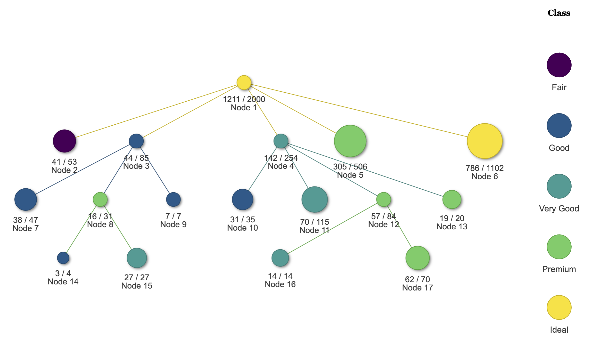
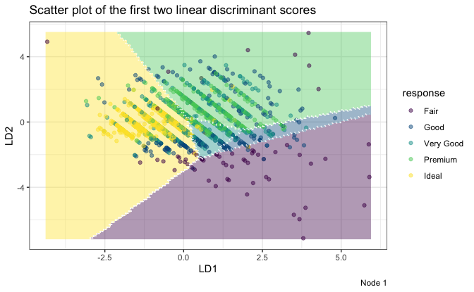
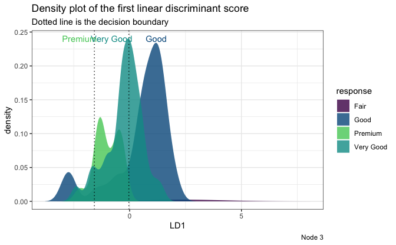

LDATree is an R modeling package for fitting classification trees. If you are unfamiliar with classification trees, here is a tutorial about the traditional CART and its R implementation rpart.
Overview
Compared to other similar trees, LDATree sets itself apart in the following ways:
It applies the idea of LDA (Linear Discriminant Analysis) when selecting variables, finding splits, and fitting models in terminal nodes.
It addresses certain limitations of the R implementation of LDA (
MASS::lda), such as handling missing values, dealing with more features than samples, and constant values within groups.Re-implement LDA using the Generalized Singular Value Decomposition (GSVD), LDATree offers quick response, particularly with large datasets.
The package also includes several visualization tools to provide deeper insights into the data.
Installation
install.packages("LDATree")Usage
To build an LDATree:
library(LDATree)
fit <- Treee(Species~., data = iris)
#> The unpruned LDA tree is completed. For now, it has 7 nodes.To plot the LDATree:
# View the overall tree
plot(fit)
# Three types of individual plots
# 1. Scatter plot on first two LD scores
plot(fit, data = iris, node = 1)
# 2. Density plot on the first LD score
plot(fit, data = iris, node = 3)
#> Warning: Groups with fewer than two data points have been dropped.
#> Warning in max(ids, na.rm = TRUE): no non-missing arguments to max; returning
#> -Inf
# 3. A message
plot(fit, data = iris, node = 5)
#> [1] "Every observation in this node is predicted to be virginica"To make predictions:
# Prediction only
predictions <- predict(fit, iris)
head(predictions)
#> [1] "setosa" "setosa" "setosa" "setosa" "setosa" "setosa"
# A more informative prediction
predictions <- predict(fit, iris, type = "all")
head(predictions)
#> response node setosa versicolor virginica
#> 1 setosa 7 1 1.346467e-26 5.470122e-41
#> 2 setosa 7 1 3.044310e-22 3.780883e-36
#> 3 setosa 7 1 1.602581e-24 7.965832e-39
#> 4 setosa 7 1 2.066476e-21 1.495780e-34
#> 5 setosa 7 1 3.323135e-27 1.520898e-41
#> 6 setosa 7 1 1.957386e-24 2.347768e-38Getting help
If you encounter a clear bug, please file an issue with a minimal reproducible example on GitHub